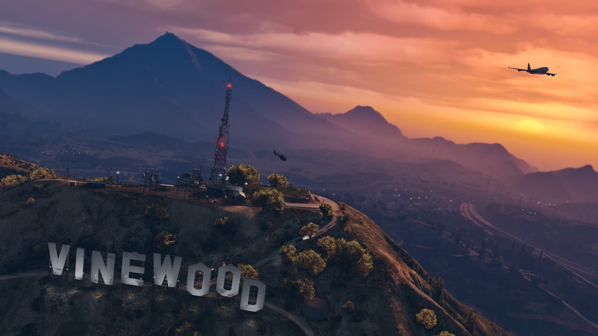

• Grand Theft Auto V

| Plataforma |
Idioma |
Lanzamiento |
Género |
Desarrollador |
PEGI |
| PS3/4/5, Xbox One, Xbox 360, Xbox Series X y Series S, Windows |
Español |
17/09/13 |
Mundo abierto, Sandbox |
Rockstar |

|
• Sinopsis del juego
Michael, Trevor, Brad y otro compañero junto a Lester eran un grupo de atracadores a gran escala que operaban por todo Estados Unidos y Canadá realizando golpes millonarios. Nuestra historia empieza en Ludendorff en el estado de North Yankton. Allí, los atracadores roban un banco y son perseguidos por la policía. Cuando están escapando, un francotirador abate a Brad de una bala y al intentar ayudarlo, Michael queda herido y al darse a sí mismo por muerto, le dice a Trevor que escape con el dinero. No obstante, sobrevive y es arrestado por el FBI. Estos le dicen que si colabora para detener a otros atracadores le liberarán y le incluirán en el programa de protección de testigos y que tendrá una vida de lujos. Él accede a cambio de que le den una vida nueva y que falseen su muerte.